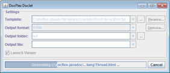
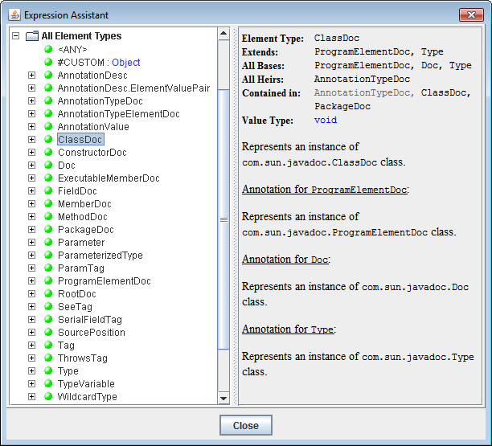

About DocFlex/Javadoc
- Overview
- Key Features
- System Requirements
- Editions
- How it works
1. Overview
DocFlex/Javadoc is both a multi-format
Javadoc Doclet
and a programming tool for rapid development of
Javadoc-based
Java API documentation generators in various output formats, which by their complexity and quality
are equal or exceed the standard Javadoc.
2. Key Features
Template-driven doclet architecture
-
Template Sets
Actual doc-generators are created in the form of special templates
interpreted by the “DocFlex Doclet”, which is
the template interpreter / output generator wrapped in the form of a
Javadoc Doclet.
See also: About DocFlex Technology | What are Templates?
-
Template Designer
The high quality graphic Template Designer
represents the templates in a visual form resembling the output they generate.
At the same time, it allows programming of very sophisticated processing
of the input data and formatting of the generated output --
the features possible to develop so far only by direct Java coding!
On the following screenshot is the
JavadocPro | class.tpl
template open in the Template Designer (click to see in full size):

-
Universal support of various formatting techniques
The templates are designed independently on a particular output format.
All formatting is specified in some universal way using
properties of
template components.
During the generation, this is rendered with the appropriate features available in the selected output format.
The following formatting techniques are supported:
- text formatting: fonts, colors, borders
- paragraph formatting: margins, pagination control, borders, colors
- border formatting: styles (solid, double, dashed, dotted), thickness, colors
- tables: arbitrary cell layouts, borders, nested tables
- lists: bulleted, numbered, delimited
- document fields (RTF): page number, number of pages, TOC, etc.
- page formatting: size, orientation, margins, headers/footers
- formatting styles
-
rendering of embedded HTML, which means interpreting in non-HTML output formats (such as RTF)
the HTML tags embedded in text data (e.g. documentation comments). Almost all HTML tags practically
usable in doc-comments are supported. See
Formatting Features | Rendering of embedded HTML
for the list of all supported HTML tags.
-
Inserting of images
- statically specified in templates
- dynamically, obtained by
<img> tags found in Java comments
- supported image formats: GIF, PNG, JPG, WMF, EMF, BMP
-
Template Parameters
Since all the content and formatting of the generated JavaDoc is programmed entirely in
templates, what previously were command-line options provided by the
Standard Doclet
now simply become template parameters.
The parameters are defined
and accessed
within templates to adjust
dynamic properties
of template components.
-
Template Libraries
The templates can be called
from one another, which (along with the template parameters) allows reusing the same templates
for different tasks and even in different doc-generators.
Data processing
-
Doclet API as virtual XML document
The entire Doclet API
is represented in the form of a virtual XML document (called “Doclet DSM”),
on which the designing and processing of templates is based.
This allows using for Javadoc some of the technologies developed around XML.
-
Location Paths / Location Rules / Element Maps
Most of data mining and retrieval is based on Location Paths / Location Rules,
which is a developed by us extension of XML XPath.
This is complemented also with the specifically adapted hash-maps (called
“element maps”)
that serve the role of indexes.
-
Java 5.0 language features
Full support of all new Java 5.0 language features:
Generic Types, Enums, Annotations.
-
Simultaneous support of Java 1.4 and Java 5
|
As you perhaps know, since JDK 5.0, the
Doclet API
has been extended to reflect the new language features introduced in Java 5.
Because of this, a doclet developed for Java 5 won't work under Java 1.4
(otherwise is possible, of course).
However, as we found (after the preliminary v1.5 beta release), Java 1.4 appears to be still well in use.
So, we have finally decided in DocFlex/Javadoc v1.5.x to support both Java versions (i.e. the new
Doclet API 1.5
and the old
Doclet API 1.4).
Since the binaries compiled for Java 5 are not compatible with Java 1.4, now, DocFlex/Javadoc v1.5.x
(both editions) includes two Java libraries: the one compiled for Java 5+ and another one
compiled for Java 1.4.
The Doclet DSM, on which any DocFlex/Javadoc
templates are based, is always the same.
That is, the Java 5 functionality (i.e. the mapping of entire
Doclet API 1.5
on a virtual XML document model) is present in both libraries.
However, in the version compiled for Java 1.4, everything concerned Java 5 is emulated
by the Doclet DSM Driver itself.
It happened to be very simple to implement. So, we've done this!
As a result, any templates
designed for either Java version will work fine under both Java 5+ and Java 1.4 as well.
The templates simply won't "notice" the difference!
|
Hypertext
-
Generation of cross-reference hyperlinks interconnecting the whole documentation.
The hyperlinks are defined in templates in a very abstract way using special
link/target keys.
-
Generation of hyperlinks to any external URLs.
This allows, for instance, linking the generated JavaDoc to any other existing javadoc-generated
documentation of external referenced classes.
-
The hyperlinks can be generated in all output formats that support them (this currently includes HTML and RTF).
-
In RTF, the cross-reference links can be represented also in the form of page number references,
which in effect makes them usable even in printed documentation.
-
In HTML, the possibility of loading several frame windows from a single hyperlink at once.
Output formats
Doclet GUI
-
Why Doclet GUI?
A JavaDoc generator implemented as
{DocFlex Doclet + template set}
is controlled by lots of settings, which include:
- The main template
- The template parameters
- The output format
- The format-specific options to the output generator
- The output destination (directory/file)
Of course, all such settings can be assigned using
options
on the Javadoc command line (most, actually, have their default values).
But there may be so many of them!
So, besides command line options, DocFlex Doclet provides a more user-friendly way
to control the template-based doclets interactively -- the Doclet GUI.
-
Generator Dialog
When no
-nodialog
option has been specified on the command line,
as soon as Javadoc finishes parsing Java sources and calls the doclet to generate the output,
the DocFlex Doclet invokes the following
Generator Dialog
(click to enlarge):

Here, you can fill in all required settings (such as the main template, the output format and
the output directory), start the generation, track its progress and stop at any moment you need.
-
Template Parameter / Output Format Option Inspectors
The additional settings, such as template parameters and output format options
can be assigned in the special property inspector dialogs invoked by clicking the buttons on the right
(click to enlarge):
Here you can edit the parameter or option values according to their data types.
The bottom panel in the inspector dialog shows the HTML-preformatted description
of each parameter or format-specific generator option.
-
Generating: start, see progress, stop / restart again
When all settings are prepared, you can start the generation by clicking <Run> button.
Then, the generator dialog will transform itself to show the generation progress (click to enlarge):

You can stop the generation at any moment by clicking <Cancel> button.
Once the generation has finished (or cancelled), the generator dialog transforms itself back
into its initial state.
After that, you can change any settings and start the generator again with a new (or modified) template set.
This, in effect, allows changing your doclet on the fly.
At that, you won't need to restart the whole Javadoc.
All the memory representation of your Java project provided via the
Doclet API
will remain the same.
This unique capability makes possible extremely fast designing and modification of your templates.
Just change something in the Template Designer, restart the generator
and you can see how it looks now in the result output!
Supplied Templates
-
Basic Template Set
This is an early version of the standard template set. It allows you to generate:
-
HTML JavaDoc
(both framed and single-file) with basic content (project overview, package summaries, class details).
-
RTF JavaDoc
The basic template set consists of just 14
template files
(plus one icon), which totally occupy 415 KB.
That was all what was needed to implement the entire Java API documentation generator
for both HTML and RTF output formats simultaneously!
For more details about the basic template set, please see:
DocFlex/Javadoc | Basic Templates
-
JavadocPro Template Set
“JavadocPro”
is a new template set available since the version 1.6.0.
Using it you will be able to generate:
This everything is complemented with a possibility to selectively
filter classes and members by tags/annotations,
a feature not seen in any other software known to us!
Here is a demo of framed HTML JavaDoc generated with
JavadocPro Template Set
(click on a screenshot to view the real HTML):
For more sample docs generated with the new template set, please see:
DocFlex/Javadoc | Examples
Further details about “JavadocPro” are available on the page:
DocFlex/Javadoc | JavadocPro
Integrations
3. System Requirements
DocFlex/Javadoc requires the
Javadoc Tool
delivered with any Java Development Kit (JDK) version 7, 6.x, 5.x or 1.4.x.
(Java 7 may be preferable as it is the fastest!)
Since DocFlex/Javadoc is a pure Java application
(the Template Designer GUI is based entirely on
Swing),
it is supposed to work on any operating system with the installed JDK.
Specifically, the software available for downloads
includes both MS Windows BAT files and Linux shell script files
to run DocFlex/Javadoc immediately on those operating systems.
(We have been also reported that DocFlex/Javadoc was successfully working under Mac OS X).
Additionally, a sample Ant buildfile and Maven POM file are provided to demonstrate
integration of DocFlex Doclet both with Apache Ant and Maven
(see also Documentation | Integrations).
For further details, please see product README files on the downloads page.
4. Editions
DocFlex/Javadoc comes in two editions:
- DocFlex/Javadoc - Full Edition
- DocFlex/Doclet - Reduced Free Edition
You can freely download both editions from the Downloads page.
Full Edition
The full edition, called “DocFlex/Javadoc” as it is,
includes all features available in this product line:
-
Template Designer - provides a GUI to design/modify templates.
-
DocFlex Doclet - the template interpreter / output generator wrapped in the form
of a Javadoc Doclet.
-
Basic Template Set
- an early version of standard template set.
-
JavadocPro Template Set -
the new advanced template set able to generate classic HTML JavaDoc as well as redesigned RTF documentation
with a possibility to exclude classes/members by tags/annotations.
This everything is covered by the same “DocFlex/Javadoc”, depending on which
it may work in one of three modes:
The differences between those modes are shown in the table:
DocFlex/Doclet
This is a reduced DocFlex/Javadoc
without the Template Designer.
It includes:
-
DocFlex Doclet
-
Basic Template Set
-
JavadocPro Template Set
DocFlex/Doclet is covered by the Free License.
What exactly it allows is shown in this table:
| Feature / Functionality
| Availability
|
|
License type
|
Free License
|
|
Possibility to create/modify templates
|
– |
Execution of custom templates.
Note: If your custom templates are derived from a template set provided by Filigris Works,
their execution will depend also on your license for that template application
(see Licensing of Templates).
|
only those created or modified the last time under a
Commercial License
for “DocFlex/Javadoc”
|
|
|
 |
|
|
reduced functionality
|
|
DocFlex Doclet (including Doclet GUI)
|
|
|
Generation of HTML, RTF, TXT (plain-text) output
|
|
|
No limitation on input Java project (number of classes etc.)
|
|
|
Any number of output files of any size
|
|
|
Possible usage of generated documentation
|
any usage
|
5. How it works
Here is a UML
implementation diagram, which depicts the functional structure of DocFlex/Javadoc:

Main Components
The DocFlex/Javadoc implementation consists of four main components:
-
The Doclet DSM Driver, which represents a bridge between Javadoc
Doclet API
and DocFlex core. The driver connects to Javadoc
using Doclet API and supplies data via DSM (Data Source Model) interface that is
a representation of Javadoc data source in the form understandable for DocFlex core. This representation is
called Doclet DSM. The driver also supports
DSM Type interface which provides the data structure and type information about
this data source. The DSM interface is used by DocFlex Generator to obtain data it operates. The DSM Type
interface is used both by the generator to know how to handle those data, and by the
Template Designer to provide the data type information during
designing of the templates.
-
The DocFlex Doclet component provides
com.docflex.javadoc.Doclet
class,
which is the one to be specified with the -doclet option on
the Javadoc command line. The DocFlex Doclet component processes the command line options received
from the Javadoc, initiates the Doclet DSM Driver and starts the generator.
It also may invoke the Doclet GUI, which provides a user-friendly interface
to specify most of parameters and settings used by the generator.
For further details, please see:
Documentation | DocFlex Doclet
-
The DocFlex Generator, which is launched by DocFlex Doclet and receives from it:
- The Doclet DSM Driver ready to supply data from Javadoc
- The template to be interpreted
- The template parameters and other settings
The generator executes the template and generates the output documentation.
-
The Template Designer, which provides a GUI for designing the templates.
It also starts Doclet DSM Driver (however, without connection to Javadoc) and uses information provided
by DSM Type interface. In the next section, we shall discuss what that information is.
Doclet DSM
When Javadoc
is started, first, it collects the information about the Java sources to be documented.
Javadoc does this by parsing all the Java classes
(most likely, it just calls from itself the Java compiler that does that parsing job).
Once the collecting of the information is finished, Javadoc calls a doclet (by default, the
Standard Doclet)
and passes to it all the Java source information organized in the form of a tree-like representation,
which is provided to the doclet via the
Doclet API.
One may notice, however, that the structure of that representation is very much similar to that described by
DOM (the Document Object Model of an XML file).
All data provided by Doclet API can be represented either as some XML elements or as their attributes.
DocFlex/Javadoc makes use of this. It maps all the
Doclet API
classes (such as
com.sun.javadoc.ClassDoc)
to the equally named elements and the values returned by the methods of those classes
-- to the element's children and attributes (see below).
As a result, the entire Doclet API is mapped on some XML-like representation
called Doclet Data Source Model (or Doclet DSM).
The elements and attributes, on which everything is mapped,
are called DSM elements and DSM attributes.
Actually, that XML-like representation is not created in memory.
Rather, it is maintained dynamically by the Doclet DSM Driver.
When a particular element or attribute is needed, the driver just calls the corresponding method
of a Doclet API class.
The methods of
Doclet API
classes (or more precisely, the data they return) are mapped according to the following rules:
-
If a method returns one or more objects whose type has an aggregation relationship with the given class
(i.e. each returned objects is a part of the object of this class) and, in addition, the method returns all
aggregated objects of such type, then the returned objects are interpreted as children of the DSM element
associated with the given class.
For example, class
com.sun.javadoc.ClassDoc
has a method methods(), which returns an array of
com.sun.javadoc.FieldDoc
objects representing all fields of a Java class being documented. Those two classes and method
are mapped as the following:
- Class
com.sun.javadoc.ClassDoc is mapped to DSM element ClassDoc
- Class
com.sun.javadoc.FieldDoc is mapped to DSM element FieldDoc
-
Method
ClassDoc.fields() is mapped into parent/child relationship between ClassDoc
and FieldDoc elements according to the following XML
DTD declaration:
<!ELEMENT ClassDoc (FieldDoc*)>
-
If a method returns object(s) whose type has an association relationship with the given class,
or in the case of aggregation, the returned array represents only a subset of all aggregated objects
of this type, then this method is mapped as an attribute with
IDREF type
(single- or multi-valued depending on the cardinality of the returned objects).
For example, method com.sun.javadoc.ClassDoc.interfaces() returns ClassDoc
objects, which represent all interfaces implemented by a documented Java class. Those interfaces are not
part of this class. They exist independently. So, the relationship between the interfaces and the class
implementing them should be interpreted as association. Therefore, the method
ClassDoc.interfaces() is mapped as an attribute interfaces of the
ClassDoc DSM element.
Here is how this might look in the form of an XML DTD declaration:
<!ATTRLIST ClassDoc interfaces IDREFS>
-
If a method returns a primitive type (or array of primitive type), it is mapped as an attribute
of the DSM element associated with the given class. The attribute data type is the same as the one returned
by the method.
(Note: DocFlex introduces additional
data types
not presented in XML DTD to handle values of DSM elements and attributes suitable for Java-based data sources.)
For example, method com.sun.javadoc.ClassDoc.isAbstract(), which returns a boolean value,
is mapped to a isAbstact attribute of the ClassDoc DSM element.
Here is how this would looks in the form of a XML DTD declaration
(if BOOLEAN data type was allowed in DTD):
<!ATTRLIST ClassDoc isAbstract BOOLEAN>
You can see all mapping of
Doclet API
to XML
used by Doclet DSM, if you look at
FlexQuery Assistance Dialog
invoked from the Template Designer. Here is a screenshot of it (click to see a larger screenshot):

In effect, the tree visible on this picture represents all the
Doclet API
in a very simple but equally powerful form.
How fast it works
Even though the entire JavaDoc Generator is implemented as a
set of templates, which adds an additional level
of interpretation, we have passed a very long way of optimizations.
Now, by its performance, the result doclet
(i.e. DocFlex Doclet + templates)
may well rival with anything written directly in Java!
Here are a couple of tests that have been run on Java SE 6u3 JDK Source Code (downloaded from:
http://java.sun.com/javase/downloads/)
using JavadocPro templates and default
generator settings.
Generation of Framed HTML Documentation
The following is the result of the generation of a framed
HTML documentation
by all Java sources of the following packages (with all subpackages):
which is essentially identical to the entire
Java SE 6 API Specification.
| Number of packages/classes: |
196 / 3558 |
| Total source code size: |
40.8 Mb (all files) |
| Generation time (1): |
637 sec (Windows XP 32-bit) |
| Generation time (2): |
449 sec (Windows 7 64-bit) |
| Result HTML documentation: |
187 Mb |
| Number of generated files: |
8491 |
| Template Set: |
JavadocPro |
| DocFlex/Javadoc version: |
1.6.0 |
| JDK version: |
1.7.0 (32-bit / 64-bit) |
| Computer platform: |
Intel Core 2 Duo E6600, 4GB RAM |
|
Generation of RTF Documentation
The following is the result of the generation of a single-file
RTF documentation
by the Java sources of
javax.swing
package and subpackages:
| Number of packages/classes: |
17 / 633 |
| Total source code size: |
10.8 Mb (all files) |
| Generation time: |
93 sec |
| Result RTF document: |
22.5 Mb (with images) |
| Number of pages (A4): |
3516 |
| Template Set: |
JavadocPro |
| DocFlex/Javadoc version: |
1.6.0 |
| JDK version: |
1.7.0 (Windows XP 32-bit) |
| Computer platform: |
Intel Core 2 Duo E6600, 4GB RAM |
|
Copyright© 2003-2012 Filigris Works, Leonid Rudy Softwareprodukte. All rights reserved.
To contact us, please visit
www.filigris.com or e-mail to: contact@filigris.com